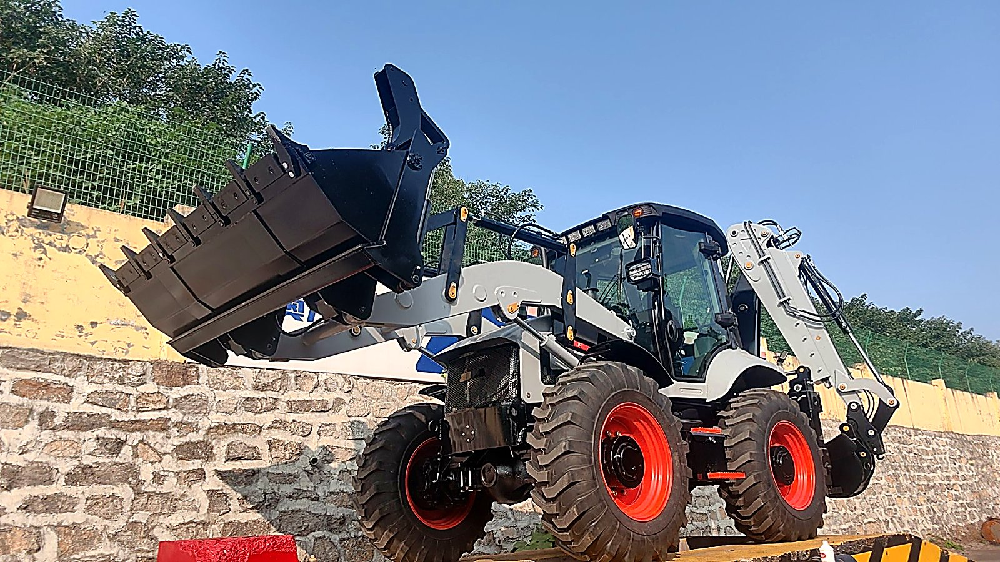
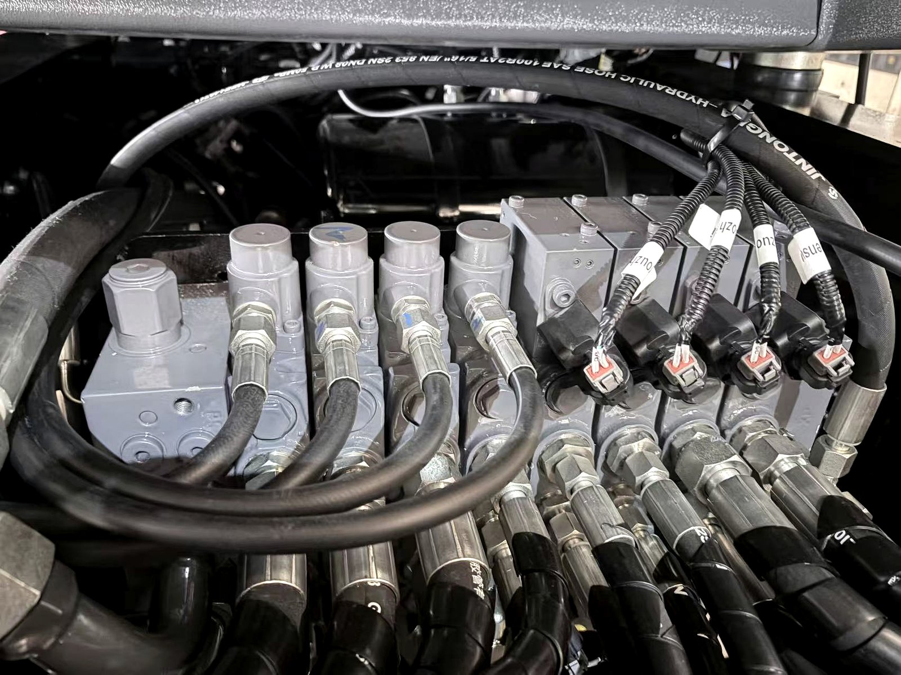
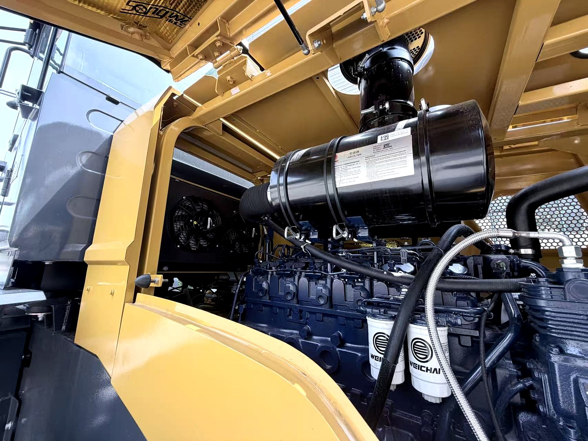

When a buyer flies in to inspect a machine at my factory, the first thing they ask about is the engine. But the first thing I test is the hydraulic system — because the hydraulic system is where 70 percent of a backhoe loader's problems live. The engine either runs or it does not. The hydraulics can be partially working, deceptively working, or quietly destroying themselves while everything looks fine on the outside.
I have spent years on the factory floor watching hydraulic systems get assembled, tested, and shipped. I have also spent years getting calls from clients in Africa, the Middle East, Southeast Asia and South America when something goes wrong — and almost every time, the problem traces back to the same handful of causes. This article is the complete guide I wish every buyer had before they purchased a machine, because understanding the hydraulic system is the difference between a machine that runs trouble-free for 8,000 hours and one that needs a pump replacement at 2,500.
Whether you are buying new, evaluating used, or trying to keep your current machine alive, this guide covers how the system works, what goes wrong, how to maintain it, and how to test it before you spend your money.

In This Guide
- What the Hydraulic System Actually Does
- The Four Main Components
- How Hydraulic Pressure Works — In Plain Language
- Gear Pump vs Piston Pump: The Most Important Spec Decision
- Open-Center vs Closed-Center Systems
- Hydraulic Oil: The Most Important Decision You Make
- How Heat Kills Hydraulic Systems
- Common Hydraulic Problems and What Each Symptom Means
- The Maintenance Schedule That Saves Your Hydraulic System
- How to Test a Hydraulic System Before You Buy
- Should You Upgrade Your Hydraulic System?
- Frequently Asked Questions
What the Hydraulic System Actually Does
If you strip away the engine, the transmission, and the axles, the hydraulic system is what makes a backhoe loader a backhoe loader. It is the system that takes the rotational power of the diesel engine and converts it into the precise, controllable force that moves the loader arms up and down, swings and digs with the backhoe, curls and dumps the bucket, and raises and lowers the stabilizers.
Without hydraulics, a backhoe loader is just a tractor with a shovel bolted to it. The hydraulic system is what gives the operator the ability to lift a ton of material, hold it steady at any height, place it exactly where it needs to go, and do it all with the movement of a joystick. Every dig, every lift, every swing, every stabilizer deployment — all of it is hydraulic power.
Here is the important thing to understand: the hydraulic system does not store energy the way a battery does. It generates force in real time. When you move the joystick, the pump pressurizes oil, that oil pushes a cylinder, and the cylinder moves the arm. When you release the joystick, the pressure stops. The system is always working in the present tense — there is no reserve. This is why a weak pump, a clogged filter, or contaminated oil shows up immediately as slow or weak movement. The system cannot compensate for its own problems.
The Four Main Components
Every backhoe loader hydraulic system, regardless of brand or size, has four main parts. Understanding what each one does is the foundation for everything else in this guide.
1. The Hydraulic Pump
The pump is the heart of the system. It is driven by a power take-off (PTO) from the engine, and its job is to push oil from the tank into the system under pressure. The pump runs whenever the engine is running — it does not start and stop with joystick movement. How much oil it pushes and at what pressure depends on the pump type, which I will cover in detail in the next section.
The pump is also the most expensive single component in the hydraulic system to replace. A new pump can cost $1,500 to $4,000 depending on type and brand. This is why pump health is the thing I check most carefully when evaluating a used machine — it is the component most likely to have been neglected and most expensive to fix. For more on pump lifespan and when to replace it, see my article on backhoe loader lifespan and operating hours.
2. The Control Valve Block
The valve block is the brain of the hydraulic system. It sits between the pump and the cylinders, and its job is to route pressurized oil to the right place at the right time. When the operator moves the loader joystick, a spool inside the valve block slides open and routes oil to the loader cylinders. Move the backhoe joystick, a different spool opens. Each function — loader lift, loader tilt, backhoe swing, boom up/down, dipper in/out, bucket curl, left stabilizer, right stabilizer — has its own spool inside the valve block.
The valve block also contains the system's pressure relief valves. These are safety devices that prevent pressure from exceeding the system's design limit. If a relief valve sticks open, the system will be weak. If one sticks closed, the system can over-pressurize and blow a hose. The valve block is not a wearing part in the way a pump is — it typically lasts 5,000 to 8,000 hours — but it is sensitive to contamination, and internal spool wear shows up as cylinder drift and sluggish response.

3. The Cylinders
The cylinders are the muscles. Each cylinder is a tube with a piston inside it. When pressurized oil enters one side of the piston, it pushes the rod out. When oil enters the other side, it pushes the rod back in. The loader has two lift cylinders and two tilt cylinders. The backhoe has a boom cylinder, a dipper cylinder, and a bucket cylinder, plus a swing cylinder (or two). The stabilizers each have one cylinder.
The wearing part on a cylinder is not the tube or the rod — it is the seals. Seals keep the pressurized oil on one side of the piston and prevent it from leaking to the other side. When seals fail, oil bypasses the piston, and the cylinder loses its ability to hold a load. This shows up as "drift" — the boom or bucket slowly sinks when the operator is not touching the controls. Cylinder seals typically last 4,000 to 6,000 hours, and resealing a cylinder is one of the most common and affordable hydraulic repairs.
4. The Tank, Filter, and Hoses
The hydraulic tank stores the oil, the filter cleans it, and the hoses carry it between all the components. These seem like the simple parts, but they are where most preventable problems originate. A tank that is low on oil means the pump is sucking air. A clogged filter means the pump is working harder than it should. A hose that is kinked, abraded, or past its service life is a burst waiting to happen.
The filter is the component I am most strict about. On a new machine, the first hydraulic filter change should happen at 100 hours — not 500. This is because the first 100 hours of operation generate more metal particles than any other period, as components break in. If that first filter change is skipped, those particles circulate through the pump and valve block, and the damage is done before anyone notices. For the full filter and oil schedule, see my complete maintenance guide.
How Hydraulic Pressure Works — In Plain Language
I am going to explain this without the physics textbook, because understanding the principle is what helps you diagnose problems later.
Imagine you have a syringe with the needle end blocked. You push the plunger, and the pressure inside goes up. Now imagine you connect that syringe to another syringe with a tube. When you push the first plunger, the second plunger moves out. That is hydraulics in its simplest form — you push oil from one place to another, and the oil pushes something else.
The key principle is this: oil cannot be compressed. When the pump pushes oil into a cylinder, the oil has nowhere to go except to push the piston. The force is determined by the pressure (how hard the oil is being pushed) multiplied by the area of the piston. A small piston under high pressure can lift just as much as a large piston under low pressure — but the large piston will move slower.
This is why a weak pump shows up as slow movement, not weak lifting. If the pump is worn and cannot maintain pressure, the cylinder still moves — it just takes longer to get there. The machine can still lift the load; it just does it slowly. If you hear "the hydraulics are slow," the first thing to check is pump output, not cylinder size.
Pressure is measured in bar or PSI. Most backhoe loader hydraulic systems operate at 160 to 210 bar (2,300 to 3,000 PSI). The pressure is set by the relief valve in the valve block, not by the pump. The pump produces flow (volume of oil per minute), and the system's resistance to that flow creates pressure. This distinction matters: a pump does not "make" pressure — it makes flow, and pressure is the result of the system resisting that flow.
My way of explaining it to buyers: The pump is a water tap. The valve block is the tap handle. The cylinder is the bucket you are filling. Open the tap (move the joystick), water flows (oil moves), the bucket fills (cylinder extends). Close the tap (release the joystick), water stops (oil holds position). Low water pressure (worn pump) means the bucket fills slowly. A leaky bucket (bad seals) means the water drains out (cylinder drifts). It is that simple.
Gear Pump vs Piston Pump: The Most Important Spec Decision
If there is one specification that separates a good backhoe loader from a cheap one, it is the type of hydraulic pump. This is the decision that affects performance, longevity, heat generation, and total cost of ownership more than any other single component choice. And it is the thing most buyers do not know to ask about.
Gear Pump
A gear pump uses two meshed gears inside a housing. As the gears turn, they push oil through the pump. It is simple, robust, cheap to manufacture, and cheap to replace. A gear pump is perfectly adequate for light to moderate work — municipal maintenance, occasional loading, intermittent digging.
The downside of a gear pump is that it runs at fixed displacement. This means it always pushes the same amount of oil per revolution, regardless of what the system needs. When the operator is not moving any controls, the pump is still pushing oil at full volume. That excess oil has to go somewhere, so it is routed back to the tank through a relief valve — and in the process, it generates heat. This is why machines with gear pumps run hotter and consume more fuel than machines with piston pumps. The energy that is not being used for work is being wasted as heat.
Piston Pump (Variable Displacement)
A piston pump uses a set of pistons arranged around a rotating swashplate. The angle of the swashplate determines how much oil each piston pushes per revolution. When the system does not need flow, the swashplate flattens, the pistons barely move, and the pump produces almost no flow — which means almost no heat and almost no wasted energy.
The advantages of a piston pump are significant:
- Runs cooler — because it only produces flow when demanded, less oil is wasted through relief valves and less heat is generated
- More efficient — less energy wasted means lower fuel consumption, typically 5 to 10 percent
- Longer pump life — piston pumps typically run 4,000 to 6,000 hours; gear pumps often need service at 3,000
- Better control — flow can be adjusted precisely, giving the operator finer feel and more accurate metering
- Better for attachments — hydraulic breakers, augers, and other attachments that demand flow on demand work better with a piston pump
The downside of a piston pump is cost. A piston pump costs 40 to 60 percent more than a gear pump of equivalent capacity. It is also more complex — more internal parts, tighter tolerances, and more sensitive to oil contamination. But if you are doing continuous heavy work, the piston pump pays for itself in fuel savings, longer pump life, and fewer hydraulic problems.
| Characteristic | Gear Pump | Piston Pump |
|---|---|---|
| Cost | Lower | 40-60% higher |
| Displacement | Fixed | Variable (load-sensing) |
| Heat generation | High (wasted flow) | Low (flow on demand) |
| Fuel efficiency | Lower | 5-10% better |
| Pump life | 3,000-5,000 hrs | 4,000-6,000 hrs |
| Control precision | Good | Excellent |
| Best for | Light/intermittent work | Continuous heavy work, attachments |
On our product line, the compact machines like the BL 35-12 typically come with a gear pump because they are designed for light to moderate duty, while the heavy-duty models like the BL 70-25 can be specified with a piston pump for buyers who need continuous heavy performance. The choice should be based on how you plan to use the machine, not on the sticker price. If you are loading trucks eight hours a day, a gear pump will cost you more in fuel, heat, and premature pump replacement than the piston pump would have cost upfront.
Open-Center vs Closed-Center Systems
There is another hydraulic system distinction that matters, though it is less commonly discussed: whether the system is open-center or closed-center. This affects how multiple functions can be operated simultaneously and how the system responds under load.
Open-Center System
In an open-center system, the valve block has an open passage in the center. When no controls are being used, oil flows from the pump through the valve block and back to the tank in a continuous loop. When the operator moves a control, the spool slides and blocks that center passage, redirecting oil to the cylinder. This means oil is always flowing — the pump is always working, even when nothing is happening at the working end.
Open-center systems are simpler, cheaper, and common on smaller and mid-range backhoe loaders. The downside is that they cannot efficiently operate multiple functions at full power simultaneously — the oil flow splits between functions, and whichever function has the least resistance gets the most flow. If you are lifting the loader arms and curling the bucket at the same time, the bucket will slow down as the arms load up.
Closed-Center System
In a closed-center system, the valve block is closed in the center position. When no controls are being used, the pump produces near-zero flow (on a piston pump) or the excess flow is routed through a more efficient unloading valve. When the operator moves a control, the spool opens and oil is directed to the cylinder, but the system maintains pressure behind the valve and can deliver full pressure to multiple functions simultaneously.
Closed-center systems with piston pumps are the gold standard for heavy-duty work. They allow the operator to run multiple functions at full power at the same time — loader arms and bucket, boom and dipper, stabilizers and swing — without any function slowing down. They also run cooler and more efficiently because the pump is not constantly pushing oil through the valve block when the system is idle.
For most buyers, the choice between open-center and closed-center is already made by the manufacturer based on the machine's intended use class. But if you are comparing two machines and one has a closed-center piston system and the other has an open-center gear system, you should understand that they are in different performance categories — not just different price points.
Hydraulic Oil: The Most Important Decision You Make
I am going to say something that may sound dramatic but is completely true: the hydraulic oil you use matters more than the pump you have. A mid-grade pump with immaculate oil will outlast a premium pump with contaminated oil, every time. I have seen it on my own factory floor and on my clients' machines.
Viscosity Grade
Most backhoe loaders use ISO VG 46 hydraulic oil (also labeled AW 46 or ISO 46). This is the standard grade for moderate climates. In cold climates where temperatures regularly drop below freezing, ISO VG 32 may be specified because it flows better at low temperatures and puts less strain on the pump at startup. In very hot climates where ambient temperatures regularly exceed 40°C, ISO VG 68 may be used because it maintains its protective film at higher temperatures.
Using the wrong viscosity is one of the fastest ways to damage a pump. Oil that is too thick (high viscosity for a cold climate) starves the pump at startup and can cause cavitation. Oil that is too thin (low viscosity for a hot climate) loses its lubricating film and allows metal-to-metal contact inside the pump. Always check the machine's manual for the specified grade, and never mix grades.
Oil Cleanliness
Here is the fact that changes how you think about hydraulic oil: a particle of dirt 5 microns in size — too small to see — can destroy a hydraulic pump. The internal tolerances in a piston pump are measured in microns. A single piece of contamination, small enough that you would never notice it, can score a valve spool, scratch a piston bore, or embed in a bearing surface.
This is why I am fanatical about oil cleanliness. On the factory floor, we filter new oil before it goes into a machine. We cap every hose and port during assembly. We run the system under pressure and check the filter before the machine ships. And when a client calls me with a hydraulic problem, the first question I ask is: "When did you last change the hydraulic filter?"

Oil Change Intervals
| Service Item | Interval | Notes |
|---|---|---|
| Hydraulic filter (first change) | 100 hours | Critical: removes break-in debris from new components |
| Hydraulic filter (subsequent) | Every 500 hours | Or every 6 months, whichever comes first |
| Hydraulic oil change | Every 2,000 hours | Or annually for low-use machines |
| Tank breather cap | Every 1,000 hours | Prevents dust ingestion when oil level changes |
| Oil sample analysis | Every 1,000 hours | Optional but catches problems early |
If you do nothing else from this article, do this: change the hydraulic filter on schedule, every time, without exception. The filter is a $30 to $50 part. The pump it protects costs $1,500 to $4,000. There is no better insurance on a backhoe loader.
How Heat Kills Hydraulic Systems
After contamination, heat is the second biggest killer of hydraulic systems. And the two are related — a system running hot degrades its oil, which causes more wear, which generates more heat. It is a vicious cycle that, once started, will destroy the system from the inside out if not interrupted.
Hydraulic oil is formulated with additives — anti-wear agents, anti-oxidants, anti-foaming agents, and viscosity index improvers. These additives are what separate hydraulic oil from plain mineral oil, and they are what give the oil its ability to protect the pump under pressure. When oil runs above 85°C (185°F), these additives begin to break down. Above 95°C (203°F), they degrade rapidly, and the oil starts to lose its protective properties.
The effects of hot oil are:
- Seal hardening — rubber seals lose their elasticity and begin to crack, leading to internal leakage and cylinder drift
- Viscosity loss — the oil thins out, the lubricating film between moving parts gets thinner, and metal-to-metal contact begins
- Additive breakdown — anti-wear agents oxidize and form varnish deposits on valve spools and pump components
- Oxidation — the oil itself reacts with oxygen and forms acids that attack seals and metal surfaces
- Foaming — hot oil releases dissolved air, which forms bubbles, which compress when pressurized, which causes spongy, erratic hydraulic response
If your machine's hydraulic oil temperature gauge is reading above 80°C during normal operation, something is wrong. The three most common causes are:
- A clogged oil cooler. The cooler is usually a finned heat exchanger, often mounted in front of the engine radiator. Dust, dirt, and debris block the fins, and the cooler stops cooling. Clean it with compressed air or a pressure washer (on low pressure, from the engine side out).
- Low oil level. Less oil in the system means less oil to absorb and dissipate heat. A system that is 20 percent low on oil will run noticeably hotter. Check the sight glass on the tank, and top up with the correct grade.
- A worn pump. When a pump is worn, it produces less flow at a given pressure. The system compensates by running longer at relief-valve pressure, which generates heat. If the oil cooler is clean and the level is correct and the system is still running hot, the pump is the prime suspect.
Other, less common causes include a relief valve that is bypassing, a hose restriction, or oil that has degraded past its useful life. The key is to find the cause, not just add an auxiliary cooler. Adding a bigger cooler to a system with a worn pump is like putting a bigger radiator on a car with a blown head gasket — it masks the symptom while the real problem gets worse.
My rule: If the hydraulic oil temperature exceeds 85°C, stop the machine. Do not keep working. Find the cause before you do another hour of operation. Every hour you run hot oil is an hour you are cutting life off the pump, the valve block, and every seal in the system.
Common Hydraulic Problems and What Each Symptom Means
One of the most useful things I can give you is a symptom-to-cause map. When a client calls me with a hydraulic problem, I can usually narrow it down to two or three likely causes before they even open the hood, just by asking what the symptom is. Here is the table I use:
| Symptom | Most Likely Cause | What to Check First |
|---|---|---|
| All functions slow | Worn pump, low oil, clogged filter | Oil level, filter condition, pump output pressure |
| One function slow, others normal | Restricted hose or worn spool for that function | Hose for kinks/blockage, valve spool for that function |
| Cylinder drifts under load | Worn cylinder seal or holding valve | Isolate cylinder: if drift stops with load-hold valve closed, it is the seal; if it continues, it is the valve |
| System runs hot | Clogged cooler, low oil, worn pump | Clean cooler, check oil level, check pump output |
| Foaming oil in tank sight glass | Air ingestion at pump inlet or wrong oil | Check inlet hose clamps and seals, verify oil grade |
| Jerkky or spongy response | Air in system or foaming oil | Bleed air from cylinders, check for foaming |
| Pump whining or growling | Cavitation (air at inlet) or worn pump | Check inlet for air leaks, check oil level, inspect pump |
| Hose burst | Abrasion, age, pressure spike, or wrong replacement hose | Check burst location for abrasion; verify hose pressure rating |
| Bucket or boom will not hold under load | Holding valve failure or seal failure | Test each cylinder individually under load |
| Relief valve chattering | Contaminated relief valve or wrong spring | Remove and clean relief valve, check for contamination |
For a deeper dive into each of these problems and their repair procedures, my complete troubleshooting guide maps every symptom to its cause, the diagnostic steps, and the repair decision — including when to fix and when to replace.
The Maintenance Schedule That Saves Your Hydraulic System
I have one client in East Africa who has been running the same backhoe loader for 11 years and 9,000 hours. The original hydraulic pump is still in the machine. That is not luck — it is maintenance. Here is the schedule he follows, and the schedule I give to every client:
| Service Item | Interval | Why It Matters |
|---|---|---|
| Check hydraulic oil level | Daily, before startup | Low oil starves the pump and causes cavitation |
| Grease all cylinder pins and pivot points | Every 50 hours (daily in dust) | Prevents pin wear that loads cylinders unevenly |
| Inspect all hoses for abrasion and leaks | Every 50 hours | Catch hose failures before they burst |
| Change hydraulic filter (first) | 100 hours (new machine) | Removes break-in metal particles |
| Clean hydraulic oil cooler | Every 250 hours (weekly in dust) | Prevents overheating — the #2 system killer |
| Change hydraulic filter | Every 500 hours | The cheapest insurance you can buy for a $3,000 pump |
| Check hydraulic oil condition (visual) | Every 500 hours | Look for dark color, milky appearance, burnt smell |
| Change hydraulic oil | Every 2,000 hours | Additives deplete over time; oil does not last forever |
| Clean tank breather cap | Every 1,000 hours | Prevents vacuum and dust ingestion |
| Replace all hydraulic hoses | Every 4,000 hours or 5 years | Hoses degrade internally even without external damage |
| Reseal all cylinders | Every 4,000-6,000 hours | Preventive resealing is cheaper than drift-induced damage |
This schedule is not optional. Every item on it exists because I have seen what happens when it is skipped. The cylinder pin that is not greased wears oval, which loads the cylinder rod at an angle, which scores the seal, which causes drift, which leads to a load dropping unexpectedly. The filter that is not changed lets contamination through, which scores the pump, which loses efficiency, which generates heat, which degrades the oil, which accelerates everything. The chain of consequences is real, and it starts with a $30 filter that someone did not change on time.
For the full maintenance schedule across all systems — not just hydraulic — see my complete maintenance guide, which covers engine, transmission, axles, electrical, and structural inspection with exact intervals and capacities.
How to Test a Hydraulic System Before You Buy
If you are buying a machine — new or used — the hydraulic test is the most important thing you can do. Here is the exact procedure I use when a client asks me to inspect a machine on their behalf. You can do this yourself in about 15 minutes.
Step 1: Cold Start
Start the machine from cold. Do not let the seller warm it up for you. A cold start tells you more than a warm start ever will. The engine should fire within 3 to 5 seconds. Let it idle for 2 to 3 minutes to warm up the hydraulic oil — cold oil is thick, and you do not want to stress the pump by loading it immediately.
Step 2: Cycle Every Function
From the operator's seat, cycle every hydraulic function one at a time:
- Loader: arms up, arms down, bucket tilt back, bucket tilt forward
- Backhoe: boom up, boom down, boom swing left, boom swing right, dipper in, dipper out, bucket curl, bucket open
- Stabilizers: left down, left up, right down, right up
Each function should respond immediately when you move the control — not after a half-second delay. The movement should be smooth and consistent, not jerky or spongy. If a function hesitates, it means air in the line, a worn spool, or a weak pump. If it jerks, it means air or foaming oil. If it is slow compared to other functions, it means a restriction or wear in that specific circuit.
Step 3: Load-Hold Test
This is the test that catches seal and valve problems. Raise the loader arms to full height and hold them there for 10 seconds without touching the controls. The arms should not drop more than a couple of centimeters. If they sink noticeably, you have cylinder drift — which means a worn seal or a failing holding valve.
Do the same with the backhoe: extend the boom fully and hold, curl the bucket fully and hold, swing the boom to one side and hold. Any drift beyond a small amount is a sign of internal leakage.
Step 4: Temperature Watch
Run all functions continuously for 10 minutes. Dig, lift, curl, swing, cycle the stabilizers. Then check the hydraulic oil temperature gauge. It should be under 80°C. If it is climbing past 85°C during normal cycling, something is wrong — the cooler may be clogged, the oil may be low, or the pump may be worn.
Step 5: Listen
With the engine idling and no controls being moved, listen to the pump. You should hear a steady, smooth hum. Whining, growling, or intermittent knocking means cavitation (air at the inlet), worn pump internals, or a failing bearing. None of those are cheap fixes.
Step 6: Check the Oil
Look at the oil in the tank sight glass or dipstick. It should be amber to honey-colored and clear. If it is dark brown or black, it is overdue for a change. If it is milky, water has gotten in. If it smells burnt, it has been running too hot. Any of these is a sign of neglect, and you should factor the cost of a full oil and filter change (and possibly a pump inspection) into your purchase price.
My advice: Never buy a backhoe loader without doing this test. If the seller will not let you cold-start the machine and cycle every function, walk away. A machine that tests clean on this procedure will almost certainly serve you well. A machine that fails any step will almost certainly cost you money. For the complete pre-purchase inspection across all systems, see my inspection checklist.
Should You Upgrade Your Hydraulic System?
I sometimes get asked whether it is worth upgrading a machine's hydraulic system after purchase — usually replacing a gear pump with a piston pump, or adding an auxiliary hydraulic circuit for attachments. Here is my honest guidance.
Gear Pump to Piston Pump Upgrade
This is possible on some machines but not all. The conversion requires not just a new pump but also a different valve block (closed-center) and potentially different plumbing. On machines where it is supported, the cost is typically $2,000 to $5,000. Whether it is worth it depends entirely on your usage:
- Do it if: You are doing continuous heavy work (8+ hours/day of loading or hard digging), running hydraulic attachments like breakers or augers, or operating in a hot climate where heat is already a problem.
- Do not do it if: Your machine does light or intermittent work, you are not experiencing heat or performance problems, or the machine is near the end of its economic life anyway.
Adding an Auxiliary Hydraulic Circuit
If you want to run hydraulic attachments — breakers, augers, grapples, sweepers — you need an auxiliary circuit with a quick-disconnect coupler on the front of the machine. Many backhoe loaders come with this from the factory. If yours does not, adding one is straightforward and usually costs $500 to $1,500, depending on whether the valve block has a spare port. This is one of the most worthwhile upgrades you can make, because it transforms the machine from a digger/loader into a multi-tool platform. See my attachments guide for what you can run and how to choose.
Adding a Return Filter or Bypass Filter
Some owners add a supplementary kidney-loop filter — a separate pump and filter unit that continuously cleans the hydraulic oil independent of the main system. These cost $300 to $800 and can extend oil and pump life significantly, especially in dusty environments. I recommend them for machines working in quarry, demolition, or desert conditions where contamination is a constant threat. This is a cheap investment with a real return.
For a deeper understanding of how the hydraulic system fits into the machine's overall operation — engine, drivetrain, and electrical — my article on how a backhoe loader works covers the complete machine from input to output.
Frequently Asked Questions
How does the hydraulic system on a backhoe loader work?
The hydraulic system uses a pump driven by the engine to pressurize oil, which is routed through a control valve block to the cylinders that move the loader arms, backhoe boom, bucket, and stabilizers. When the operator moves a joystick, a valve spool opens and routes pressurized oil to one side of a cylinder, which extends or retracts it. The oil returns to the tank, is filtered, and cycles back through the pump.
What is the difference between a gear pump and a piston pump on a backhoe loader?
A gear pump is simpler, cheaper, and adequate for light to moderate work, but it runs at a fixed displacement and wastes energy as heat when the system is not demanding flow. A piston pump adjusts its output to match demand, runs cooler, lasts longer, and delivers more precise control. For continuous heavy work, a piston pump is significantly better. For light or intermittent use, a gear pump is perfectly adequate.
How often should I change the hydraulic oil on a backhoe loader?
Change the hydraulic oil every 2,000 operating hours, or at minimum once a year for low-use machines. Change the hydraulic filter every 500 hours, with the first filter change at 100 hours on a new machine. If the oil is dark, milky, or smells burnt before the scheduled change, change it immediately regardless of hours.
Why is my backhoe loader hydraulic system running hot?
Hydraulic oil above 85°C is a warning sign. The three most common causes are a clogged hydraulic oil cooler, low oil level in the tank, or a worn hydraulic pump working harder than it should. Other causes include a bypassing relief valve, a hose restriction, or contaminated oil that has lost its viscosity. Find and fix the cause — running hot destroys seals and oil additives.
What are the most common hydraulic problems on a backhoe loader?
The most common problems are slow or weak cylinder movement (low oil, worn pump, or internal valve leakage), cylinder drift (holding valve or seal failure), overheating (clogged cooler, low oil, or worn pump), foaming oil (air ingestion or wrong oil type), and hose failure (age, abrasion, or pressure spikes). Most are preventable with clean oil, clean filters, and on-time maintenance.
How long does a backhoe loader hydraulic pump last?
A well-maintained hydraulic pump typically lasts 3,000 to 5,000 operating hours. A piston pump with clean oil and a functioning filtration system can reach the top of that range. A gear pump working in dusty conditions with neglected oil changes may need service closer to 3,000 hours. The single biggest factor in pump life is oil cleanliness.
What hydraulic oil should I use in my backhoe loader?
Most backhoe loaders use ISO VG 46 hydraulic oil. In cold climates, ISO VG 32 may be specified for better flow at low temperatures. In very hot climates, ISO VG 68 may be used. Always check your machine's manual for the exact specification, and never mix different oil types. Using the wrong viscosity is one of the fastest ways to damage a hydraulic pump.
Can I test a backhoe loader's hydraulic system before buying?
Yes, and you should. Start the machine cold, cycle every hydraulic function, check for hesitation or unusual noise, hold each function under load for 10 seconds to check for drift, and watch the hydraulic oil temperature for 10 minutes of operation. A healthy system responds instantly, holds position under load, and stays under 80°C during normal operation.
What does it mean when a hydraulic cylinder drifts on a backhoe loader?
Cylinder drift means oil is leaking past a seal or a holding valve. On a single cylinder, it is usually a worn piston seal inside the cylinder. On multiple cylinders, the problem is more likely in the control valve block. Drift is a safety issue — the machine cannot reliably hold a load — and should be fixed before the machine is put back to work.
Should I upgrade from a gear pump to a piston pump?
If your machine is doing continuous heavy work — loading trucks all day, trenching in hard ground, or running hydraulic attachments like a breaker or auger — upgrading to or buying a machine with a piston pump is worth the money. The pump runs cooler, lasts longer, and gives better control. If your machine is doing light or intermittent work, a gear pump is perfectly adequate and the upgrade may not pay for itself.
Questions About Your Hydraulic System?
Whether you are trying to diagnose a problem, deciding between a gear pump and a piston pump, or evaluating a used machine's hydraulic health — I can help. I know these systems from the inside out, from the factory floor to the field. Tell me what is happening and I will give you an honest answer, not a sales pitch.
Message Vivian on WhatsApp